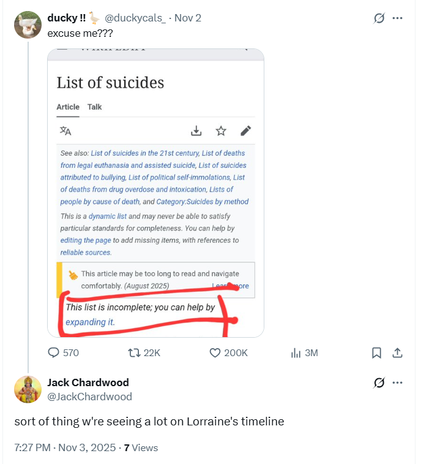

November 2025
Suicide content on my @JackChardwood account
- You may remember in January 2024, my
@JackChardwood X feed went from one content type to another, literally over night.
- This also happened with my
@1frgvn account repeatedly, but not so starkly; the account has much more activity anyway.
- Nevertheless, I would notice sudden excessive and inexplicable porn content on both timelines on a regular basis, often during the evenings.
- On these occasions, the only accounts posting anything else on my timeline seemed to be aggressive stalker fake-accounts; her flying monkeys, as it were.
- Clearly, the social media feeds on a device’s hacked browser can be 100% manipulated, and the manipulation can take multiple forms.
- I can practically see a bunch of criminal stalker apps targeting each social media platform; now probably rolled into one single application that criminal gangs use.
- Hacking a device is pretty easy, and young boys studying CS do it all the time; making sure the girls never find out how it works.
- After accessing a device, and jumping into an open session as owner, manipulating everything the true owner sees must be very easy.
- However, it’s one thing a youngster doing it with a simple hacker application, it’s quite another to have access to these AI-based process-heavy highly professional distributed applications that bypass safeguarding censorship completely.
- It also appears that X (the only platform I’m familiar with) has some leaky code on the backend which allows criminals to tweak the algorithm for targeted users. Sounds like an inside job.
- Criminals must prompt the application to post the triggering content required.
- Here’s an idea of how prompts like these might read:
- Animated, non-hostile porn with fellatio and post-coitus bliss ensuring man is [add particular size, shape, coloring] and woman is [add here].
- Insipid Indian self-help bro content.
- Wild out-there hallucinogen-type content from space bros.
- Cat posts with messages that read like a true romance; with 5% of those posts having a random threat towards a female user.
- Violent porn with aggression and threat towards a viewer we assume is female.
- Subtle sexual grooming content for [add gender and age] who likes animals.
- Show target biblical posts only. (I rather like this one).
- Etc.
- Once prompted, the target’s timeline changes completely.
- It’s very clever, quite obvious too, unless you’re a kid, I guess.
- A smart target might notice and wonder what was going on.
- There may be adjustable subtlety levels; I suspect the less obvious it is the more powerful hold it has.
- If you happen to be able to drug a target at the same time, or perhaps know that they’re a pothead or similar, then this triggering mechanism will have even more potency.
- So, why am I mentioning this here?
- Well, since I remembered the anal fissure I noticed when my dad visited me in 2015 about two weeks ago, my
@JackChardwood account has undergone another of these transformations.
- Suicide content. A bunch of tweets about suicide from accounts as far from my graph as you can imagine, hiding in amongst everything else. Something I’ve never ever seen before.

- I take this as confirmation from the criminal porn gangs of Dénia that, just like Alicia said about Bali, the worst thing in the world happened.
- The townsfolk and one other were the only ones who knew the real reason I became suicidally depressed in 2015; perhaps they’re hoping for a bit of that again.
- Sorry-not-sorry folks. Not going to happen.
- Furthermore, this suicide content on my feed I have never seen before supports my suspicion that Lorraine Blackbourn, and others in the area and at the conservatory, may have been manipulated online into committing suicide.
- Another view of some of the less unpleasant of these changes in content is that someone was/is doing a bit of show-and-tell for my benefit.
- Thank you, whoever you are. It has helped enormously.
- But seriously, you should all be done for mass murder and mass attempted murder.
BAU at the conservatory
- Today, it is business as usual at the conservatory.

Flight from Heathrow to Bangkok
- Agents, everywhere.
- One sitting at the end of my row, leaving a space in the middle.
- One I meet outside the toilet when my stomach starts relaxing over India.
- Others I cannot mistake.
- Incredible.
- It feels like protection, but I wonder if it was, rather, declaration of ownership.
- Protection, for me, makes a nice change.
Anantara
- I’ve left earlier than planned so I stay at the Anantara for a bit.
- Agents, everywhere.
- They even set up a squirrel lookalike at the pool, which upset me and made me hopeful at the same time.
- At the cafe they were serving a dessert called: I love you strawberry much.
Staying next to the American Embassy in Bangkok
- I stay for about 10 days in a lovely hotel right beside the embassy, booked online, of course, and in advance.
- I feel a little safer, a little bit looked-after shall we say.
- There are discrepancies but nevertheless it’s somewhat comforting after trudging many circles of seemingly endless criminal hell.
- On the room service menu there seems to be only pages and pages of Caesar salad on offer. Very amusing.
- I get a wound on my left groin which doesn’t behave like a normal boil. In fact, if I had been pierced there, it would be problematic because that was a boil area and so I used skin-thinning cream on it.
- This wound reopens in July 2024.
A bridge collapses
- What’s your favorite color?
- Um… what? Wait..
- WRONG!!!!
- Aaaaaaaahhhhhhhhhhhhh.